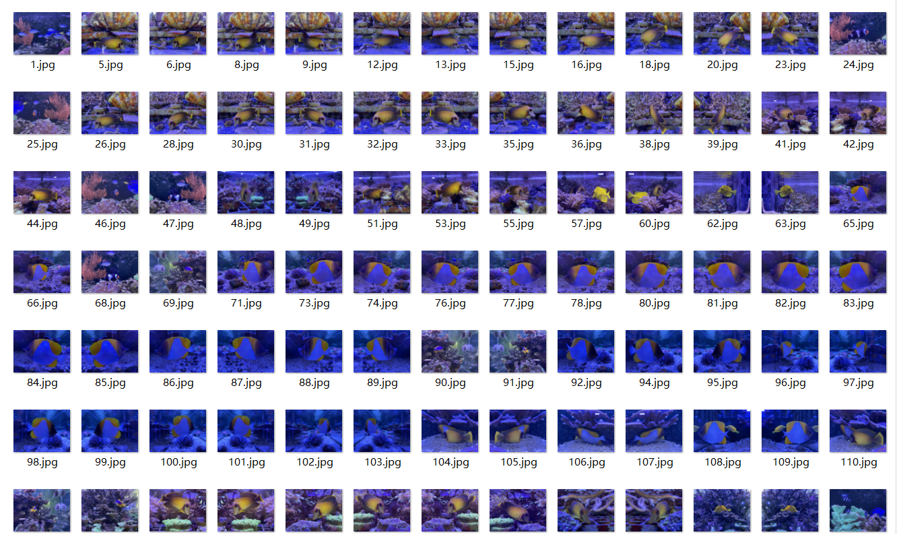
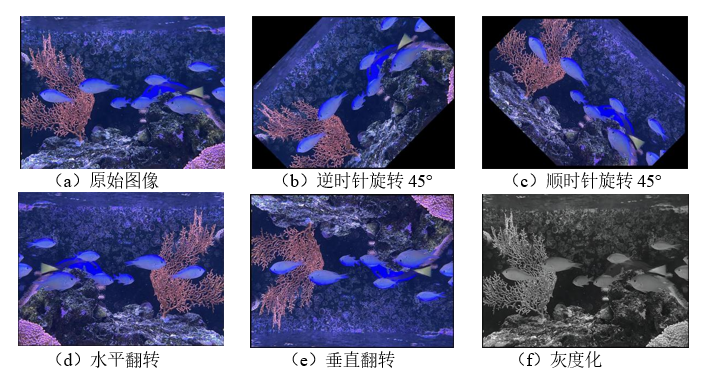
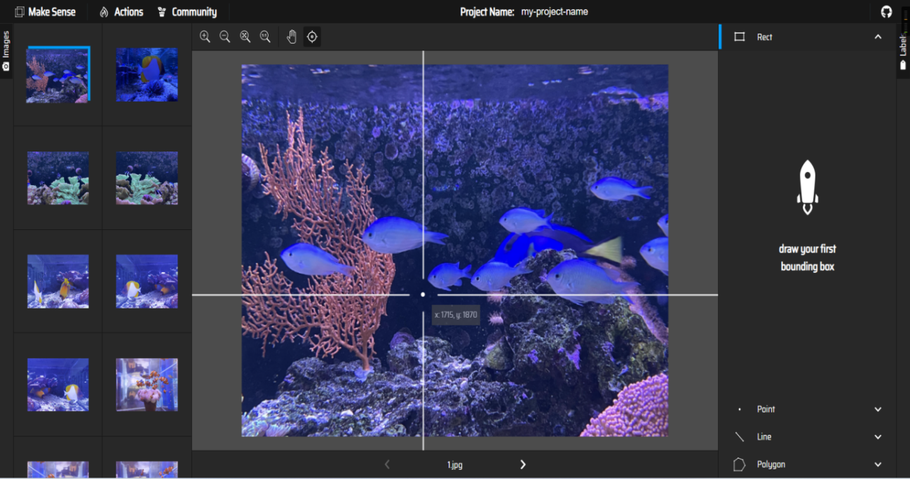
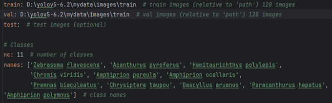

基于YOLOv5深度神经网络的鱼类目标检测
这个是我毕业论文中的项目，
数据采集
所以本文采集了海南省三亚市附近的常见鱼类图像，包括Amphiprion ocellaris（公子小丑鱼）、Zebrasoma flavescens（黄高鳍刺尾鱼）、Acanthurus pyroferus（黑鳃刺尾鱼）、Hemitaurichthys polylepis（多鳞霞鲽鱼）、Chromis viridis（蓝绿光鳃鱼）、Amphiprion pereula（三带双锯鱼）、Premnas biaculeatus（棘颊雀鲷）、Chrysiptera taupou（陶波金翅雀鲷）、Dascyllus aruanus（宅泥鱼）、Paracanthurus hepatus（拟刺尾鲷）、Amphiprion polymnus（鞍斑双锯鱼）在内的11种常见的鱼类并使用相机拍摄的方式总共获取到3936张图片，经过人工筛选去除质量不佳的图片后，仍保留了3396张实地拍摄的有效图片。

数据预处理
由于建模并训练权重需要大量的训练数据，同时为了减少由图像变换对南海典型鱼类检测的影响，所以要对训练集进行数据预处理，具体操作有顺时针翻转、逆时针翻转、水平翻转、垂直翻转、灰度化五种方法。

数据标注
数据标注是将原始数据与相关信息或标签关联起来的过程。在机器学习和深度学习领域，数据标注是非常重要的，这个过程通常为每个图像创建一个对应的标签文件，其中包含对象的类别和边界框的坐标信息。并且模型也需要通过已标注的数据来学习和进行预测。在这里本文使用了makesense.ai这个在线数据标注网站进行全人工手动标注，makesense操作界面如图4.2所示。将训练所需图片数据导入，选择Object Detection，随后把鱼类名称标签导入，手动对每一张图片上鱼类目标信息进行标注，最后在网站Actions中选择Export Annotations生成YOLO数据集。

链接数据
上述过程数据集建立完成后，需要与YOLO模型建立链接。在这一过程中本文将自建数据采用COCO数据集的形式与模型链接，首先在YOLO工程中新建MyData目录，在MyData中新建images和labels文件夹，并且在下面各建立test和train文件夹，其次将自制的图片数据放入images/train文件夹下以及标注生成的labels放入labels/train下，然后复制coco128.yaml文件新建MyData.yaml修改该文件中的数据路径以及数据标签等信息

上述工作全部做完后就可以开始训练了，不过在开始训练之前还需要对模型进行调参。
训练效果演示
「用心生活，认真做事。」返回首页